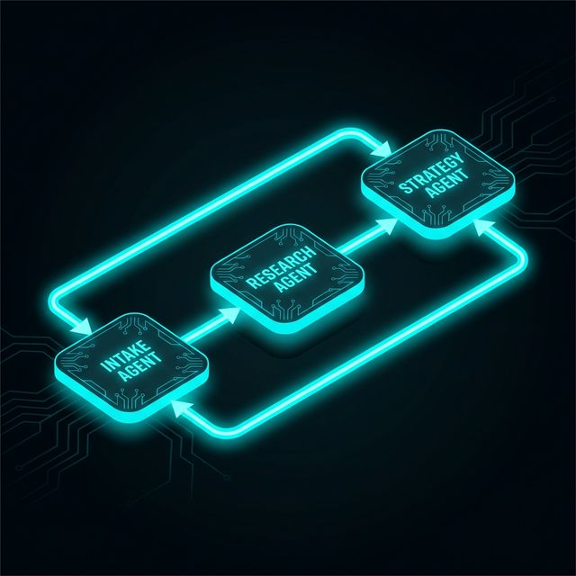

The Problem
Employment law cases involve complex research across federal regulations, state statutes, and case precedents. Traditional legal workflows are:
- Time-consuming: Hours spent on manual legal research across multiple databases
- Error-prone: Risk of missing critical precedents or recent regulatory changes
- Expensive: High billable hours for routine case analysis and document drafting
- Inconsistent: Quality varies based on individual attorney experience
The Solution
JurisLink is a multi-agent AI system that orchestrates specialized agents to handle different aspects of legal case analysis. Built on LangGraph, it provides a structured, repeatable workflow for employment law cases.
Intake Agent
Gathers case details through guided conversation
Research Agent
Searches legal databases via Tavily API
Strategy Agent
Analyzes findings and recommends approaches
Assistant Agent
Generates professional legal documents
System Architecture
The agents communicate through a shared state graph, passing context and findings between stages. LangGraph ensures proper sequencing and error handling.

Key Features
Real-Time Legal Research
Integrates Tavily API for up-to-date legal research, pulling from court databases, regulatory sites, and legal journals.
Professional Document Generation
Outputs formatted legal letters, case summaries, and strategy memos using templated document generation.
Conversational Interface
React-based frontend provides an intuitive chat interface with case history tracking and document downloads.
Serverless Deployment
Runs on Azure Functions for scalable, cost-effective operation with automatic scaling based on demand.
Impact & Results
Efficiency Gains
- Reduces initial case research time from hours to minutes
- Generates consistent, well-structured legal documents
- Provides citations and references for all recommendations
- Enables legal professionals to focus on high-value strategic work
Technology Stack
LangGraph
Agent orchestration & state management
GPT-4o
Natural language understanding & generation
Tavily API
Real-time legal web search
Azure Functions
Serverless backend hosting
React
Modern frontend UI
Python
Core agent logic